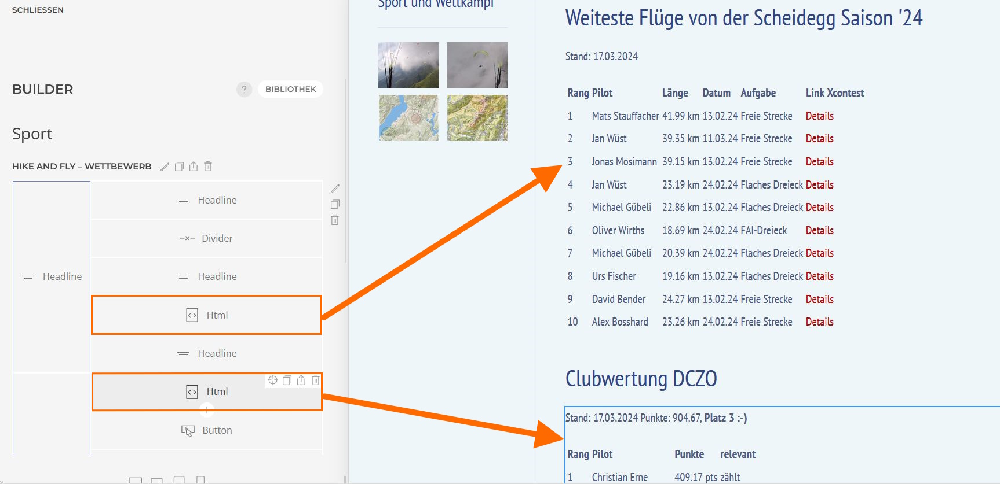
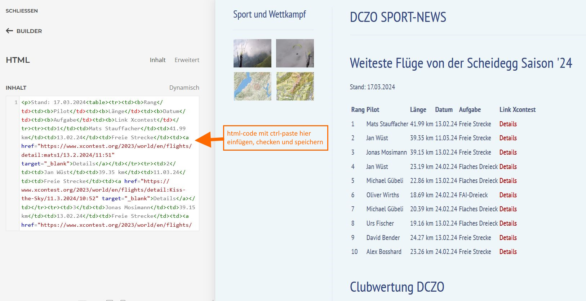

Xcontest-Rankings auf DCZO-Website aktualisieren
Weiteste Flüge ab Scheidegg
1. Die folgende Xcontest-Seite besuchen. Xcontest-Login erforderlich:
Link zu den Flügen ab der Scheidegg in 2024
2. Seitenquelltext anzeigen (rechte Maustaste -> view page source). Diesen als html mit dem filenamen 'ranking.html' abspeichern.
3. Python-Script 'ranking' im selben Verzeichnis starten. Das fertige html in die DCZO-Webseite kopieren, siehe Schreenshot
Clubranking
1. Seitenquelltext der folgenden Seite aufrufen (kein Login erforderlich): Link Clubranking
2. Seitenquelltext als html-file mit dem namen 'club_ranking.html' ablegen.
3. Python-Script 'club_ranking' im selben Verzeichnis starten. -> das fertige html in die DCZO-Webseite kopieren.


Codebase in Github
The current version of the cade already calls the XCONTEST-Webserver. Pasting of the source-code is not necessary any longer
Password and XContest-Username are in the constants: constants.XC_user / constants.XC_password